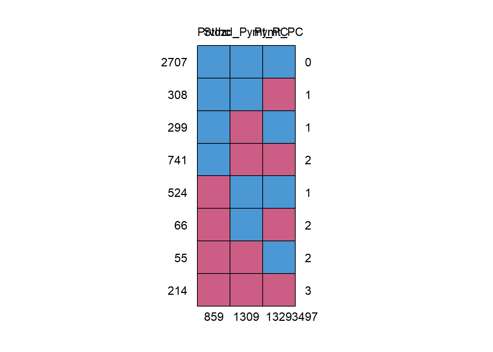
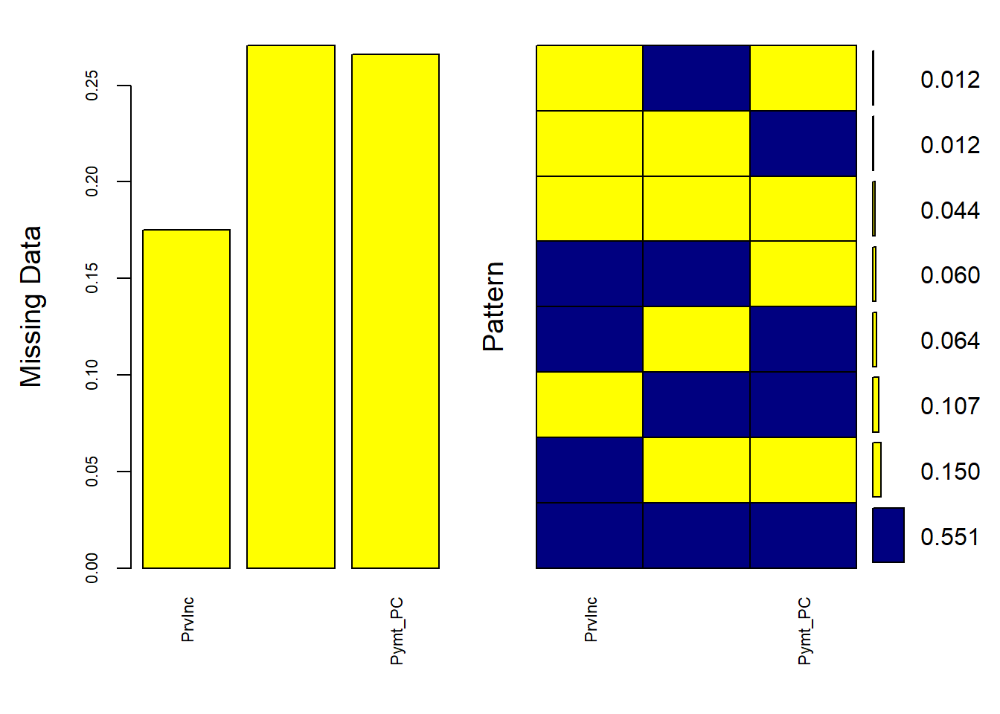
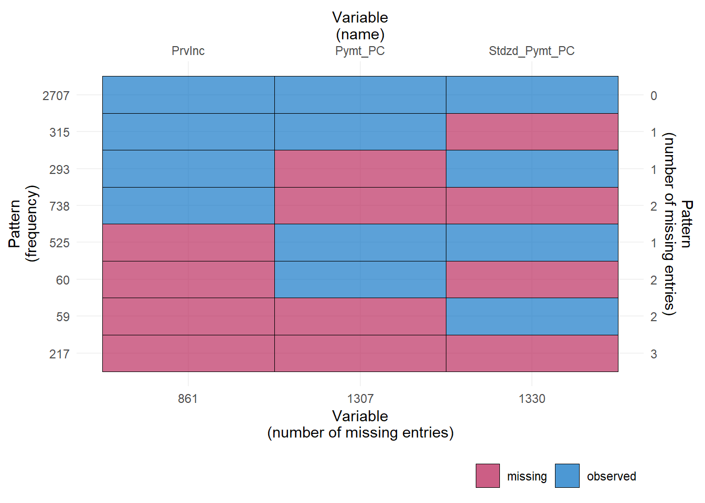

Code
# loading packages
library(ggplot2)
library(dplyr)
library(mice)
library(missForest)
library(VIM)
library(ggmice)
library(xlsx)
library(readxl)
library(knitr)Missing data is ubiquitous in any dataset. Although alone it is not a problem, missing data becomes a problem when its analysis shows bias or lacks power. While the occurrence of missing data is immense, its discussion in many peer-reviewed journal articles is not so. Even more infrequent were the discussions on how best to accurately institute observations in the missing dataset. Some researchers have observed, (Little et al. 2014) there are areas of loss when it comes to missing data – bias, power, and recoverability.
Missing data in experiments and analyses can lead to inaccurately distributed data and calculations, skewed visuals (such as histograms, line graphs, etc.), and allow for inaccurate conclusions to be rendered. Determining which method is best is another challenge entirely. The problem of missing data in research applications is vast. There is a significant need to best correct the missing data points in order to provide the most accurate and complete dataset from which to analyze the research and draw accurate conclusions. Researchers suggest using the most common form of missing data analysis, Multiple Imputation (MI) in addition to other novel suggested approaches.
MI resolves the issue of “too small or too big” standard errors gathered from using traditional methods of addressing missing data. A large standard error occurs when statistical results are acquired with a lack of precision, whereas a small standard error occurs when statistical results are acquired with an overestimation of precision.
As others(Madley-Dowd et al. 2019) have noted, providing sufficient auxiliary variables can alleviate power degradation from missing data. They determined that standard error increased when the fraction of missing information (FMI) increased, while FMI decreased when auxiliary variables increased.
There has also been discussion of the concept of using machine learning to address missing data (Emmanuel et al. 2021). Using machine learning, additional imputation methods to alleviate missing data include K Nearest Neighbor (KNN) and Support Vector Machine(SVM). KNN measures distances for each missing value and pulls the replacement value from the smallest distances. KNN still performs well even with large amounts of missing data, and in iterative versions, it has been shown to converge faster than many other methods, yet with a high computation time. SVM is similar, but rather than weighting each distance as with KMM, it aims to create a hyperplane that has the largest distance to data points (2021). It should be noted that the KNN method outperformed the experiment’s implementation of a random forest decision tree for small missingness ratios.
Many researchers argue that single imputation methods should be used only in randomized trials (Austin et al. 2021).
Throughout the topic research, a common theme has immerged. Missing data is categorized into either one of three types: missing completely at random, missing at random, and missing not at random.
Kang (2013) introduces us to the three types of missing data as initially proposed by Rubin (Rubin 1976). This was expanded upon (Pedersen et al. 2017) to discuss the thorough estimation value of using MI in data analysis along with providing the three-step method. They (Pedersen et al. 2017) conclude the results of using MI are similar to using complete datasets thereby enhancing the credibility of the method’s robustness.
Missing completely at random (MCAR) refers to the probability that missing data is either not related to a specific value that is supposed to be obtained or the set of obtained values. The data can also be missing due to equipment failure, samples lost in transit, or unsatisfactory samples (Kang 2013). MCAR data are unbiased and therefore an advantage due to its estimated parameters being objective and undeterred due to missing data. As a result, MCAR is the best-case option for missing data in an experiment. When Missing not at random (MCAR) occurs, no bias is observed, only power is affected resulting in standard error (SE) around the estimates being larger due to reduced sample size. Missing at random (MAR) refers to the probability that missing responses are dependent upon the set of observed responses, but not related to the specific values expected to be obtained given the history of the obtained variable prior to the experiment. This is the most realistic option for missing data. When Missing at random (MAR) occurs, the missing data is knowable and missingness is predictable, therefore, estimates can be determined; bias can be “recovered” (Kang 2013).
Missing not at random (MNAR) refers to any case of missing data that cannot be classified as either missing completely at random or missing at random. MNAR is the least desirable scenario of missing data. The only way to accurately obtain an unbiased observation of the data is to model the data and use the model to incorporate it into a more complex model to estimate the values (Kang 2013). When Missing not at random (MNAR) occurs, the subjects affect the variables. Subjects do not want to disclose accurate information for fear or shame, and therefore forego providing a data point altogether (Little et al. 2014).
Kang attempts to provide solutions to fill in the missing data points(Kang 2013) . His research suggests the best solution to missing data is to be proactive to prevent it. When prevention fails to eliminate missing data, Kang offers several data analysis solutions to make the data more robust. The most common solution is complete case analysis, also stated as listwise analysis, with the aim to eliminate the missing data records altogether and analyze only the remaining whole data records.
Meanwhile, (Lee et al. 2021) deem the method beneficial for some use cases, but not sufficient for most analyses. They introduce Treatment and Reporting of Missing data in Observational Studies (TARMOS), a novel framework alternative to MI, whose aim is to provide transparency and limit redundancies in substituted data. The framework notes the importance of using auxiliary variables to gather information from incomplete observations.
In addition to using MI, Little, et al. recommended using full-information maximum likelihood to mitigate the issues of missing data (Little et al. 2014). Using the three discussed planned missing data designs - multiform questionnaire protocol, two-method planned missing design, and wave-missing longitudinal design – the user is able to better understand how to overcome missing data issues.
It is essential to have quality datasets to avoid corrupted machine learning models. A derivative of MI is the Multivariate Imputation by Chained Equation (MICE) algorithm which assumes data is missing at random (MAR). The process uses multiple imputation methods to provide better results by considering the uncertainty of missing data.
Others(Khan and Hoque 2020) provide an alternative to MICE. Known as SICE, the new method improves upon the already existing Multivariate Imputation by Chained Equation (MICE) algorithm (found as a package in R), split into two variations to impute both categorical and numerical data. The method improves missing data by creating a hybrid of single and multiple imputation techniques. Using the respective variant, SICE-Categorical and SICE-Numeric, of the Single Center Imputation from Multiple Chained Equation (SICE) algorithm, the missing data values are corrected using a thorough approach to closely find a more accurate value to use instead, using predicted values imputed using the MI approach, by computing for the imputed values a mean or mode, depending on the data type, and replacing the original imputed value with the respective central measure. An added feature of using SICE in R is that it often had the lowest computation time for its data sets.
Two main techniques of imputation exist – traditional and modern (Osman, Abu-Mahfouz, and Page 2018). The traditional technique - single imputation, deletion, and mean imputation may be obsolete. However, Hot or Cold deck imputation (replacing missing data using similar data sets), and Regression imputation (replacing missing data with points along a regression) - may prove useful with many datasets. Furthermore, single imputation may lead to biased results and underestimation of error or variability.
The dataset used to conduct the below Missing Imputation methods was adapted from the most recent study conducted by the U.S. Department of Health & Human Services which examined 21 specific chronic illnesses of Medicare beneficiaries (Medicare & Medicaid Services 2018).
The Multiple Imputation (MI) approach is used to correct the issue of imputing multiple times the missing values from the predictive distribution of the missing given observed data. “Next, the analysis model is fitted to each ‘complete’ data set and results combined using Rubin’s rules” (Kang 2013). Bias can be reduced and efficiency increased by using in the imputation step the auxiliary variables (predictive of missing values but not in the substantive model). The MI method is good but is not appropriate for handling all missing data records.
There is a three-step process for conducting a statistical analysis of MI. The stages are 1) Selecting independent variables that may help impute variables with missing data, 2) Noting the chosen statistical method, estimating in each of the imputed datasets the association of interest, and 3) Combining using Rubin’s rules the association measures from each imputed dataset (Rubin 1976). To combine, we use the following equations for Standard Error(SE), Arithmetic Average(W) and the Variability of the estimates(B), where t is a particular dataset, m is the total amount of imputed datasets, \(\hat{\theta}\) and \(\bar{\theta_t}\) are the average parameter estimate and the parameter estimate for a particular dataset, respectively. (Osman, Abu-Mahfouz, and Page 2018)
\[ \begin{align*} W=&\frac {\sum \left ({{SE}_{t} }\right)^{2}}{m} \tag{1}\\ B=&\frac {\sum \left ({\hat {\theta }_{t}-\bar {\theta } }\right)^{2}}{m-1} \tag{2}\\ SE=&\sqrt {W+B+\frac {B}{m}}\tag{3}\end{align*} \]
(Little et al. 2014 ) provide exceptional detail on how to alleviate missing data using full-information maximum likelihood and multiple imputations followed by a presentation of 3-form planned missing design to include multiform questionnaire protocols, 2-method measurement models, and wave-missing longitudinal designs.
TARMOS consists of three main steps with a series of subsets within each step. The steps are as follows. Step 1: Plan the analysis, step 2: Conduct the preplanned analysis, step 3: Report the analysis (Lee et al. 2021). The framework’s emphasis is on transparency. All expectations of the analysis and the research interests should be disclosed.
One proposed method which we deem computationally feasible for this project is multiple imputation (Little et al. 2014 ). The methodology includes performing single imputation with multiple data sets, analyzing and computing the error of each set, and combining the data into a single, final data set.
Researchers tested their proposed SICE method using four datasets, a sample of 65,000 real health records from hospitals and diagnostic clinics in Bangladesh, and a public dataset each from UCI Machine Learning Repository, Department of Mathematics of ETH Zurich, and Kaggle. The data types assessed were binary, categorical, and numeric. Researchers tested SICE performance against that of 12 existing imputation methods. Binary and numeric data responded better to SICE than the opposing methods. When using SICE, F-measurement resulted in a 20% increase while error reduction resulted in an 11% increase; both factors showed improvement using SICE compared to the existing imputation methods. There was no significant time difference when running SICE compared to MICE (Pedersen et al. 2017).
Using Multiple Imputation by Chained Equations (MICE), the multiple imputation is conducted by manipulating the imputed data and comparing it to the regression, repeating the process multiple times, (usually 5-20), to create a single data set. Most modern imputations will create 20-100 data sets. Then each of these data sets will be analyzed and compared, such that the MI estimate of any statistic is the average of the statistic across each imputed set. The variance of each statistic is based on the within-imputation variation and the between-imputation variation (Austin et al. 2021). The variable that is to be analyzed must be included in the imputation model, even if there is no missing data, otherwise, it will often be biased towards null.
For our analysis, we decided to use the R packages for predictive means matching, classification and regression trees, and lasso linear regression, defined below.
Predictive means matching(PMM) is a hot deck method, which pools complete cases which are similar to the case we are trying to impute, and randomly chooses values from the pool of prospective donors to be imputed for the missing data.For each missing variable, \(x\), we impute using parameters \(\alpha\) and covariates \(z\). We use \(h\) as a subscript for data containing \(x\) and \(j\) for data without. PMM choses a random donor from \(x_h\) such that the distance defined below is minimized.
\[ \delta_{hj}=\alpha^{mis}z_j-\alpha^{obs}z_h \tag{4} \]
Classification and regression trees(CART) looks for predictors and cutoff points in the data, and splits data into trees along these points. Classifications trees are used for discrete data, but for continuous, such as ours, regression trees are employed. Missing data is replaced very similarly to the PMM method, but data is chosen according to the tree of splitting points rather than regression (Rodgers, Jacobucci, and Grimm 2021).
Lasso linear regression fits a linear regression using the missing columns as dependent and complete columns as predictors. Then a Bayesian linear model is defined, and imputations are drawn from the posterior predictive distribution. Coefficients \(\hat{\beta_0}\) and \(\hat{\beta}^{lasso}\) are estimated by
\[(\hat{\beta_0}, \hat{\beta}^{lasso}) =argmin[\sum(Y_i-(\beta_0+\beta X^T_i))^2+\lambda \sum |\beta_j|] \tag5\] where Y and X are the outcome and predictors respectively. λ is a non-negative tuning parameter that controls the amount of shrinkage, with increased shrinkage for higher λ values (Musoro et al. 2014).
Prior to implementing the MICE method, we ran a missing map to get a count of which rows and columns contain missing data and how many data points are missing. As the following table and figures will show most of the columns contain their complete data set. We do, however, have three columns – Provisional Income, the Total Medicare Standardized Payment and the Total Medicare Payment. Provisional Income has 408 missing entries, and payments have missing values in 918 rows each. In our data set we have 2244 missing data points total between these columns.
# loading packages
library(ggplot2)
library(dplyr)
library(mice)
library(missForest)
library(VIM)
library(ggmice)
library(xlsx)
library(readxl)
library(knitr)Chronic_Conditions <- read_excel("Chronic_Conditions.xlsx")
#Calculate pattern of missing data
Chronic_Conditions <- Chronic_Conditions %>%
select( PrvInc , Stdzd_Pymt_PC, Pymt_PC)
plot_pattern(Chronic_Conditions)aggr_plot <- aggr(Chronic_Conditions, col=c('navyblue','red'),
numbers=TRUE, sortVars=TRUE, labels=names(data), cex.axis=.7, gap=3,
ylab=c("Histogram of missing data","Pattern"))
Variables sorted by number of missings:
Variable Count
Stdzd_Pymt_PC 0.18681319
Pymt_PC 0.18681319
PrvInc 0.08302808Figures 3 and 4: Missing Map and histogram
We can see that over 75% of the data has been recorded but between those columns we are missing roughly 25% of our data which we will utilize the MICE package to impute. Following the Missing map, we ran the MICE package in R.
Results:
# Imputes missing data using the three selected methods
mice_imputed <- data.frame(
original = Chronic_Conditions$PrvInc,
imputed_pmm = complete(mice(Chronic_Conditions, method = "pmm"))$PrvInc,
imputed_cart = complete(mice(Chronic_Conditions, method = "cart"))$PrvInc,
imputed_lasso = complete(mice(Chronic_Conditions, method = "lasso.norm"))$PrvInc
)
iter imp variable
1 1 PrvInc Stdzd_Pymt_PC Pymt_PC
1 2 PrvInc Stdzd_Pymt_PC Pymt_PC
1 3 PrvInc Stdzd_Pymt_PC Pymt_PC
1 4 PrvInc Stdzd_Pymt_PC Pymt_PC
1 5 PrvInc Stdzd_Pymt_PC Pymt_PC
2 1 PrvInc Stdzd_Pymt_PC Pymt_PC
2 2 PrvInc Stdzd_Pymt_PC Pymt_PC
2 3 PrvInc Stdzd_Pymt_PC Pymt_PC
2 4 PrvInc Stdzd_Pymt_PC Pymt_PC
2 5 PrvInc Stdzd_Pymt_PC Pymt_PC
3 1 PrvInc Stdzd_Pymt_PC Pymt_PC
3 2 PrvInc Stdzd_Pymt_PC Pymt_PC
3 3 PrvInc Stdzd_Pymt_PC Pymt_PC
3 4 PrvInc Stdzd_Pymt_PC Pymt_PC
3 5 PrvInc Stdzd_Pymt_PC Pymt_PC
4 1 PrvInc Stdzd_Pymt_PC Pymt_PC
4 2 PrvInc Stdzd_Pymt_PC Pymt_PC
4 3 PrvInc Stdzd_Pymt_PC Pymt_PC
4 4 PrvInc Stdzd_Pymt_PC Pymt_PC
4 5 PrvInc Stdzd_Pymt_PC Pymt_PC
5 1 PrvInc Stdzd_Pymt_PC Pymt_PC
5 2 PrvInc Stdzd_Pymt_PC Pymt_PC
5 3 PrvInc Stdzd_Pymt_PC Pymt_PC
5 4 PrvInc Stdzd_Pymt_PC Pymt_PC
5 5 PrvInc Stdzd_Pymt_PC Pymt_PC
iter imp variable
1 1 PrvInc Stdzd_Pymt_PC Pymt_PC
1 2 PrvInc Stdzd_Pymt_PC Pymt_PC
1 3 PrvInc Stdzd_Pymt_PC Pymt_PC
1 4 PrvInc Stdzd_Pymt_PC Pymt_PC
1 5 PrvInc Stdzd_Pymt_PC Pymt_PC
2 1 PrvInc Stdzd_Pymt_PC Pymt_PC
2 2 PrvInc Stdzd_Pymt_PC Pymt_PC
2 3 PrvInc Stdzd_Pymt_PC Pymt_PC
2 4 PrvInc Stdzd_Pymt_PC Pymt_PC
2 5 PrvInc Stdzd_Pymt_PC Pymt_PC
3 1 PrvInc Stdzd_Pymt_PC Pymt_PC
3 2 PrvInc Stdzd_Pymt_PC Pymt_PC
3 3 PrvInc Stdzd_Pymt_PC Pymt_PC
3 4 PrvInc Stdzd_Pymt_PC Pymt_PC
3 5 PrvInc Stdzd_Pymt_PC Pymt_PC
4 1 PrvInc Stdzd_Pymt_PC Pymt_PC
4 2 PrvInc Stdzd_Pymt_PC Pymt_PC
4 3 PrvInc Stdzd_Pymt_PC Pymt_PC
4 4 PrvInc Stdzd_Pymt_PC Pymt_PC
4 5 PrvInc Stdzd_Pymt_PC Pymt_PC
5 1 PrvInc Stdzd_Pymt_PC Pymt_PC
5 2 PrvInc Stdzd_Pymt_PC Pymt_PC
5 3 PrvInc Stdzd_Pymt_PC Pymt_PC
5 4 PrvInc Stdzd_Pymt_PC Pymt_PC
5 5 PrvInc Stdzd_Pymt_PC Pymt_PC
iter imp variable
1 1 PrvInc Stdzd_Pymt_PC Pymt_PC
1 2 PrvInc Stdzd_Pymt_PC Pymt_PC
1 3 PrvInc Stdzd_Pymt_PC Pymt_PC
1 4 PrvInc Stdzd_Pymt_PC Pymt_PC
1 5 PrvInc Stdzd_Pymt_PC Pymt_PC
2 1 PrvInc Stdzd_Pymt_PC Pymt_PC
2 2 PrvInc Stdzd_Pymt_PC Pymt_PC
2 3 PrvInc Stdzd_Pymt_PC Pymt_PC
2 4 PrvInc Stdzd_Pymt_PC Pymt_PC
2 5 PrvInc Stdzd_Pymt_PC Pymt_PC
3 1 PrvInc Stdzd_Pymt_PC Pymt_PC
3 2 PrvInc Stdzd_Pymt_PC Pymt_PC
3 3 PrvInc Stdzd_Pymt_PC Pymt_PC
3 4 PrvInc Stdzd_Pymt_PC Pymt_PC
3 5 PrvInc Stdzd_Pymt_PC Pymt_PC
4 1 PrvInc Stdzd_Pymt_PC Pymt_PC
4 2 PrvInc Stdzd_Pymt_PC Pymt_PC
4 3 PrvInc Stdzd_Pymt_PC Pymt_PC
4 4 PrvInc Stdzd_Pymt_PC Pymt_PC
4 5 PrvInc Stdzd_Pymt_PC Pymt_PC
5 1 PrvInc Stdzd_Pymt_PC Pymt_PC
5 2 PrvInc Stdzd_Pymt_PC Pymt_PC
5 3 PrvInc Stdzd_Pymt_PC Pymt_PC
5 4 PrvInc Stdzd_Pymt_PC Pymt_PC
5 5 PrvInc Stdzd_Pymt_PC Pymt_PC#mice_imputed #This would display all 4914 entries, alternatives?
Chronic_Conditions.mis <- prodNA(Chronic_Conditions, noNA = 0.1)After running the MICE package, we ran a MICE plot to gain a better visual of our missing data.
aggr(Chronic_Conditions.mis, col=c('navyblue', 'yellow' ),
numbers=TRUE, sortVars=TRUE,
labels=names(Chronic_Conditions.mis), cex.axis=.7,
gap=3, ylab=c("Missing Data", "Pattern"))
Variables sorted by number of missings:
Variable Count
Pymt_PC 0.2704518
Stdzd_Pymt_PC 0.2663818
PrvInc 0.1748067imputed_Data <- mice(Chronic_Conditions.mis, m=5, maxit=50, method = 'pmm', seed=500)
iter imp variable
1 1 PrvInc Stdzd_Pymt_PC Pymt_PC
1 2 PrvInc Stdzd_Pymt_PC Pymt_PC
1 3 PrvInc Stdzd_Pymt_PC Pymt_PC
1 4 PrvInc Stdzd_Pymt_PC Pymt_PC
1 5 PrvInc Stdzd_Pymt_PC Pymt_PC
2 1 PrvInc Stdzd_Pymt_PC Pymt_PC
2 2 PrvInc Stdzd_Pymt_PC Pymt_PC
2 3 PrvInc Stdzd_Pymt_PC Pymt_PC
2 4 PrvInc Stdzd_Pymt_PC Pymt_PC
2 5 PrvInc Stdzd_Pymt_PC Pymt_PC
3 1 PrvInc Stdzd_Pymt_PC Pymt_PC
3 2 PrvInc Stdzd_Pymt_PC Pymt_PC
3 3 PrvInc Stdzd_Pymt_PC Pymt_PC
3 4 PrvInc Stdzd_Pymt_PC Pymt_PC
3 5 PrvInc Stdzd_Pymt_PC Pymt_PC
4 1 PrvInc Stdzd_Pymt_PC Pymt_PC
4 2 PrvInc Stdzd_Pymt_PC Pymt_PC
4 3 PrvInc Stdzd_Pymt_PC Pymt_PC
4 4 PrvInc Stdzd_Pymt_PC Pymt_PC
4 5 PrvInc Stdzd_Pymt_PC Pymt_PC
5 1 PrvInc Stdzd_Pymt_PC Pymt_PC
5 2 PrvInc Stdzd_Pymt_PC Pymt_PC
5 3 PrvInc Stdzd_Pymt_PC Pymt_PC
5 4 PrvInc Stdzd_Pymt_PC Pymt_PC
5 5 PrvInc Stdzd_Pymt_PC Pymt_PC
6 1 PrvInc Stdzd_Pymt_PC Pymt_PC
6 2 PrvInc Stdzd_Pymt_PC Pymt_PC
6 3 PrvInc Stdzd_Pymt_PC Pymt_PC
6 4 PrvInc Stdzd_Pymt_PC Pymt_PC
6 5 PrvInc Stdzd_Pymt_PC Pymt_PC
7 1 PrvInc Stdzd_Pymt_PC Pymt_PC
7 2 PrvInc Stdzd_Pymt_PC Pymt_PC
7 3 PrvInc Stdzd_Pymt_PC Pymt_PC
7 4 PrvInc Stdzd_Pymt_PC Pymt_PC
7 5 PrvInc Stdzd_Pymt_PC Pymt_PC
8 1 PrvInc Stdzd_Pymt_PC Pymt_PC
8 2 PrvInc Stdzd_Pymt_PC Pymt_PC
8 3 PrvInc Stdzd_Pymt_PC Pymt_PC
8 4 PrvInc Stdzd_Pymt_PC Pymt_PC
8 5 PrvInc Stdzd_Pymt_PC Pymt_PC
9 1 PrvInc Stdzd_Pymt_PC Pymt_PC
9 2 PrvInc Stdzd_Pymt_PC Pymt_PC
9 3 PrvInc Stdzd_Pymt_PC Pymt_PC
9 4 PrvInc Stdzd_Pymt_PC Pymt_PC
9 5 PrvInc Stdzd_Pymt_PC Pymt_PC
10 1 PrvInc Stdzd_Pymt_PC Pymt_PC
10 2 PrvInc Stdzd_Pymt_PC Pymt_PC
10 3 PrvInc Stdzd_Pymt_PC Pymt_PC
10 4 PrvInc Stdzd_Pymt_PC Pymt_PC
10 5 PrvInc Stdzd_Pymt_PC Pymt_PC
11 1 PrvInc Stdzd_Pymt_PC Pymt_PC
11 2 PrvInc Stdzd_Pymt_PC Pymt_PC
11 3 PrvInc Stdzd_Pymt_PC Pymt_PC
11 4 PrvInc Stdzd_Pymt_PC Pymt_PC
11 5 PrvInc Stdzd_Pymt_PC Pymt_PC
12 1 PrvInc Stdzd_Pymt_PC Pymt_PC
12 2 PrvInc Stdzd_Pymt_PC Pymt_PC
12 3 PrvInc Stdzd_Pymt_PC Pymt_PC
12 4 PrvInc Stdzd_Pymt_PC Pymt_PC
12 5 PrvInc Stdzd_Pymt_PC Pymt_PC
13 1 PrvInc Stdzd_Pymt_PC Pymt_PC
13 2 PrvInc Stdzd_Pymt_PC Pymt_PC
13 3 PrvInc Stdzd_Pymt_PC Pymt_PC
13 4 PrvInc Stdzd_Pymt_PC Pymt_PC
13 5 PrvInc Stdzd_Pymt_PC Pymt_PC
14 1 PrvInc Stdzd_Pymt_PC Pymt_PC
14 2 PrvInc Stdzd_Pymt_PC Pymt_PC
14 3 PrvInc Stdzd_Pymt_PC Pymt_PC
14 4 PrvInc Stdzd_Pymt_PC Pymt_PC
14 5 PrvInc Stdzd_Pymt_PC Pymt_PC
15 1 PrvInc Stdzd_Pymt_PC Pymt_PC
15 2 PrvInc Stdzd_Pymt_PC Pymt_PC
15 3 PrvInc Stdzd_Pymt_PC Pymt_PC
15 4 PrvInc Stdzd_Pymt_PC Pymt_PC
15 5 PrvInc Stdzd_Pymt_PC Pymt_PC
16 1 PrvInc Stdzd_Pymt_PC Pymt_PC
16 2 PrvInc Stdzd_Pymt_PC Pymt_PC
16 3 PrvInc Stdzd_Pymt_PC Pymt_PC
16 4 PrvInc Stdzd_Pymt_PC Pymt_PC
16 5 PrvInc Stdzd_Pymt_PC Pymt_PC
17 1 PrvInc Stdzd_Pymt_PC Pymt_PC
17 2 PrvInc Stdzd_Pymt_PC Pymt_PC
17 3 PrvInc Stdzd_Pymt_PC Pymt_PC
17 4 PrvInc Stdzd_Pymt_PC Pymt_PC
17 5 PrvInc Stdzd_Pymt_PC Pymt_PC
18 1 PrvInc Stdzd_Pymt_PC Pymt_PC
18 2 PrvInc Stdzd_Pymt_PC Pymt_PC
18 3 PrvInc Stdzd_Pymt_PC Pymt_PC
18 4 PrvInc Stdzd_Pymt_PC Pymt_PC
18 5 PrvInc Stdzd_Pymt_PC Pymt_PC
19 1 PrvInc Stdzd_Pymt_PC Pymt_PC
19 2 PrvInc Stdzd_Pymt_PC Pymt_PC
19 3 PrvInc Stdzd_Pymt_PC Pymt_PC
19 4 PrvInc Stdzd_Pymt_PC Pymt_PC
19 5 PrvInc Stdzd_Pymt_PC Pymt_PC
20 1 PrvInc Stdzd_Pymt_PC Pymt_PC
20 2 PrvInc Stdzd_Pymt_PC Pymt_PC
20 3 PrvInc Stdzd_Pymt_PC Pymt_PC
20 4 PrvInc Stdzd_Pymt_PC Pymt_PC
20 5 PrvInc Stdzd_Pymt_PC Pymt_PC
21 1 PrvInc Stdzd_Pymt_PC Pymt_PC
21 2 PrvInc Stdzd_Pymt_PC Pymt_PC
21 3 PrvInc Stdzd_Pymt_PC Pymt_PC
21 4 PrvInc Stdzd_Pymt_PC Pymt_PC
21 5 PrvInc Stdzd_Pymt_PC Pymt_PC
22 1 PrvInc Stdzd_Pymt_PC Pymt_PC
22 2 PrvInc Stdzd_Pymt_PC Pymt_PC
22 3 PrvInc Stdzd_Pymt_PC Pymt_PC
22 4 PrvInc Stdzd_Pymt_PC Pymt_PC
22 5 PrvInc Stdzd_Pymt_PC Pymt_PC
23 1 PrvInc Stdzd_Pymt_PC Pymt_PC
23 2 PrvInc Stdzd_Pymt_PC Pymt_PC
23 3 PrvInc Stdzd_Pymt_PC Pymt_PC
23 4 PrvInc Stdzd_Pymt_PC Pymt_PC
23 5 PrvInc Stdzd_Pymt_PC Pymt_PC
24 1 PrvInc Stdzd_Pymt_PC Pymt_PC
24 2 PrvInc Stdzd_Pymt_PC Pymt_PC
24 3 PrvInc Stdzd_Pymt_PC Pymt_PC
24 4 PrvInc Stdzd_Pymt_PC Pymt_PC
24 5 PrvInc Stdzd_Pymt_PC Pymt_PC
25 1 PrvInc Stdzd_Pymt_PC Pymt_PC
25 2 PrvInc Stdzd_Pymt_PC Pymt_PC
25 3 PrvInc Stdzd_Pymt_PC Pymt_PC
25 4 PrvInc Stdzd_Pymt_PC Pymt_PC
25 5 PrvInc Stdzd_Pymt_PC Pymt_PC
26 1 PrvInc Stdzd_Pymt_PC Pymt_PC
26 2 PrvInc Stdzd_Pymt_PC Pymt_PC
26 3 PrvInc Stdzd_Pymt_PC Pymt_PC
26 4 PrvInc Stdzd_Pymt_PC Pymt_PC
26 5 PrvInc Stdzd_Pymt_PC Pymt_PC
27 1 PrvInc Stdzd_Pymt_PC Pymt_PC
27 2 PrvInc Stdzd_Pymt_PC Pymt_PC
27 3 PrvInc Stdzd_Pymt_PC Pymt_PC
27 4 PrvInc Stdzd_Pymt_PC Pymt_PC
27 5 PrvInc Stdzd_Pymt_PC Pymt_PC
28 1 PrvInc Stdzd_Pymt_PC Pymt_PC
28 2 PrvInc Stdzd_Pymt_PC Pymt_PC
28 3 PrvInc Stdzd_Pymt_PC Pymt_PC
28 4 PrvInc Stdzd_Pymt_PC Pymt_PC
28 5 PrvInc Stdzd_Pymt_PC Pymt_PC
29 1 PrvInc Stdzd_Pymt_PC Pymt_PC
29 2 PrvInc Stdzd_Pymt_PC Pymt_PC
29 3 PrvInc Stdzd_Pymt_PC Pymt_PC
29 4 PrvInc Stdzd_Pymt_PC Pymt_PC
29 5 PrvInc Stdzd_Pymt_PC Pymt_PC
30 1 PrvInc Stdzd_Pymt_PC Pymt_PC
30 2 PrvInc Stdzd_Pymt_PC Pymt_PC
30 3 PrvInc Stdzd_Pymt_PC Pymt_PC
30 4 PrvInc Stdzd_Pymt_PC Pymt_PC
30 5 PrvInc Stdzd_Pymt_PC Pymt_PC
31 1 PrvInc Stdzd_Pymt_PC Pymt_PC
31 2 PrvInc Stdzd_Pymt_PC Pymt_PC
31 3 PrvInc Stdzd_Pymt_PC Pymt_PC
31 4 PrvInc Stdzd_Pymt_PC Pymt_PC
31 5 PrvInc Stdzd_Pymt_PC Pymt_PC
32 1 PrvInc Stdzd_Pymt_PC Pymt_PC
32 2 PrvInc Stdzd_Pymt_PC Pymt_PC
32 3 PrvInc Stdzd_Pymt_PC Pymt_PC
32 4 PrvInc Stdzd_Pymt_PC Pymt_PC
32 5 PrvInc Stdzd_Pymt_PC Pymt_PC
33 1 PrvInc Stdzd_Pymt_PC Pymt_PC
33 2 PrvInc Stdzd_Pymt_PC Pymt_PC
33 3 PrvInc Stdzd_Pymt_PC Pymt_PC
33 4 PrvInc Stdzd_Pymt_PC Pymt_PC
33 5 PrvInc Stdzd_Pymt_PC Pymt_PC
34 1 PrvInc Stdzd_Pymt_PC Pymt_PC
34 2 PrvInc Stdzd_Pymt_PC Pymt_PC
34 3 PrvInc Stdzd_Pymt_PC Pymt_PC
34 4 PrvInc Stdzd_Pymt_PC Pymt_PC
34 5 PrvInc Stdzd_Pymt_PC Pymt_PC
35 1 PrvInc Stdzd_Pymt_PC Pymt_PC
35 2 PrvInc Stdzd_Pymt_PC Pymt_PC
35 3 PrvInc Stdzd_Pymt_PC Pymt_PC
35 4 PrvInc Stdzd_Pymt_PC Pymt_PC
35 5 PrvInc Stdzd_Pymt_PC Pymt_PC
36 1 PrvInc Stdzd_Pymt_PC Pymt_PC
36 2 PrvInc Stdzd_Pymt_PC Pymt_PC
36 3 PrvInc Stdzd_Pymt_PC Pymt_PC
36 4 PrvInc Stdzd_Pymt_PC Pymt_PC
36 5 PrvInc Stdzd_Pymt_PC Pymt_PC
37 1 PrvInc Stdzd_Pymt_PC Pymt_PC
37 2 PrvInc Stdzd_Pymt_PC Pymt_PC
37 3 PrvInc Stdzd_Pymt_PC Pymt_PC
37 4 PrvInc Stdzd_Pymt_PC Pymt_PC
37 5 PrvInc Stdzd_Pymt_PC Pymt_PC
38 1 PrvInc Stdzd_Pymt_PC Pymt_PC
38 2 PrvInc Stdzd_Pymt_PC Pymt_PC
38 3 PrvInc Stdzd_Pymt_PC Pymt_PC
38 4 PrvInc Stdzd_Pymt_PC Pymt_PC
38 5 PrvInc Stdzd_Pymt_PC Pymt_PC
39 1 PrvInc Stdzd_Pymt_PC Pymt_PC
39 2 PrvInc Stdzd_Pymt_PC Pymt_PC
39 3 PrvInc Stdzd_Pymt_PC Pymt_PC
39 4 PrvInc Stdzd_Pymt_PC Pymt_PC
39 5 PrvInc Stdzd_Pymt_PC Pymt_PC
40 1 PrvInc Stdzd_Pymt_PC Pymt_PC
40 2 PrvInc Stdzd_Pymt_PC Pymt_PC
40 3 PrvInc Stdzd_Pymt_PC Pymt_PC
40 4 PrvInc Stdzd_Pymt_PC Pymt_PC
40 5 PrvInc Stdzd_Pymt_PC Pymt_PC
41 1 PrvInc Stdzd_Pymt_PC Pymt_PC
41 2 PrvInc Stdzd_Pymt_PC Pymt_PC
41 3 PrvInc Stdzd_Pymt_PC Pymt_PC
41 4 PrvInc Stdzd_Pymt_PC Pymt_PC
41 5 PrvInc Stdzd_Pymt_PC Pymt_PC
42 1 PrvInc Stdzd_Pymt_PC Pymt_PC
42 2 PrvInc Stdzd_Pymt_PC Pymt_PC
42 3 PrvInc Stdzd_Pymt_PC Pymt_PC
42 4 PrvInc Stdzd_Pymt_PC Pymt_PC
42 5 PrvInc Stdzd_Pymt_PC Pymt_PC
43 1 PrvInc Stdzd_Pymt_PC Pymt_PC
43 2 PrvInc Stdzd_Pymt_PC Pymt_PC
43 3 PrvInc Stdzd_Pymt_PC Pymt_PC
43 4 PrvInc Stdzd_Pymt_PC Pymt_PC
43 5 PrvInc Stdzd_Pymt_PC Pymt_PC
44 1 PrvInc Stdzd_Pymt_PC Pymt_PC
44 2 PrvInc Stdzd_Pymt_PC Pymt_PC
44 3 PrvInc Stdzd_Pymt_PC Pymt_PC
44 4 PrvInc Stdzd_Pymt_PC Pymt_PC
44 5 PrvInc Stdzd_Pymt_PC Pymt_PC
45 1 PrvInc Stdzd_Pymt_PC Pymt_PC
45 2 PrvInc Stdzd_Pymt_PC Pymt_PC
45 3 PrvInc Stdzd_Pymt_PC Pymt_PC
45 4 PrvInc Stdzd_Pymt_PC Pymt_PC
45 5 PrvInc Stdzd_Pymt_PC Pymt_PC
46 1 PrvInc Stdzd_Pymt_PC Pymt_PC
46 2 PrvInc Stdzd_Pymt_PC Pymt_PC
46 3 PrvInc Stdzd_Pymt_PC Pymt_PC
46 4 PrvInc Stdzd_Pymt_PC Pymt_PC
46 5 PrvInc Stdzd_Pymt_PC Pymt_PC
47 1 PrvInc Stdzd_Pymt_PC Pymt_PC
47 2 PrvInc Stdzd_Pymt_PC Pymt_PC
47 3 PrvInc Stdzd_Pymt_PC Pymt_PC
47 4 PrvInc Stdzd_Pymt_PC Pymt_PC
47 5 PrvInc Stdzd_Pymt_PC Pymt_PC
48 1 PrvInc Stdzd_Pymt_PC Pymt_PC
48 2 PrvInc Stdzd_Pymt_PC Pymt_PC
48 3 PrvInc Stdzd_Pymt_PC Pymt_PC
48 4 PrvInc Stdzd_Pymt_PC Pymt_PC
48 5 PrvInc Stdzd_Pymt_PC Pymt_PC
49 1 PrvInc Stdzd_Pymt_PC Pymt_PC
49 2 PrvInc Stdzd_Pymt_PC Pymt_PC
49 3 PrvInc Stdzd_Pymt_PC Pymt_PC
49 4 PrvInc Stdzd_Pymt_PC Pymt_PC
49 5 PrvInc Stdzd_Pymt_PC Pymt_PC
50 1 PrvInc Stdzd_Pymt_PC Pymt_PC
50 2 PrvInc Stdzd_Pymt_PC Pymt_PC
50 3 PrvInc Stdzd_Pymt_PC Pymt_PC
50 4 PrvInc Stdzd_Pymt_PC Pymt_PC
50 5 PrvInc Stdzd_Pymt_PC Pymt_PCmd.pattern(Chronic_Conditions.mis)
PrvInc Stdzd_Pymt_PC Pymt_PC
2707 1 1 1 0
308 1 1 0 1
299 1 0 1 1
741 1 0 0 2
524 0 1 1 1
66 0 1 0 2
55 0 0 1 2
214 0 0 0 3
859 1309 1329 3497Figure 4: Missing data percentages per variable
Additionally, we ran the miss Forest package in R. We ran the package followed by a summary to gain a better quantitative view. Below are the code, results, and figure.
plot_pattern(Chronic_Conditions.mis)
Figure 5: Table of missing values present in each variable in dataset
summary(Chronic_Conditions.mis) PrvInc Stdzd_Pymt_PC Pymt_PC
Min. :0.0000 Min. : 0 Min. : 0
1st Qu.:0.0384 1st Qu.:18643 1st Qu.: 18446
Median :0.1114 Median :23183 Median : 22980
Mean :0.1728 Mean :24045 Mean : 24065
3rd Qu.:0.2751 3rd Qu.:28214 3rd Qu.: 28215
Max. :0.7588 Max. :68567 Max. :100028
NA's :859 NA's :1309 NA's :1329 densityplot(imputed_Data)
Figure 6: Density Plot